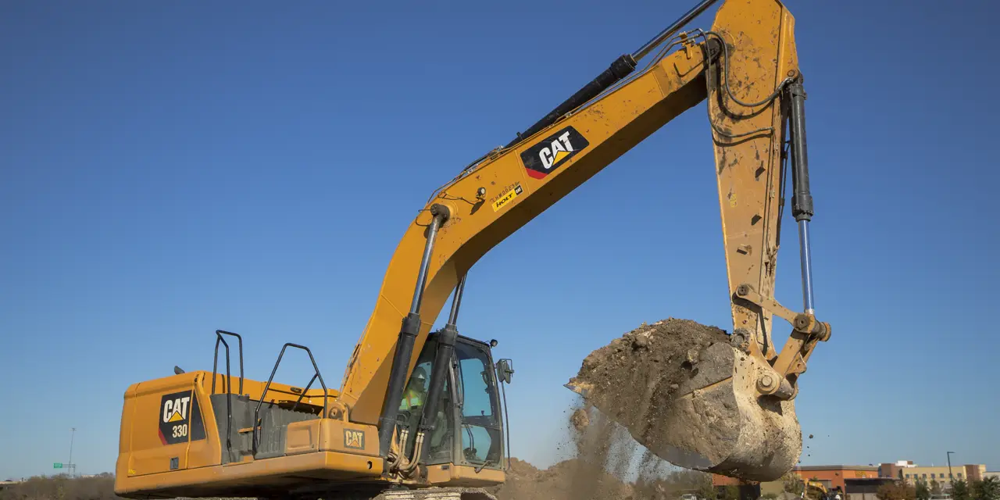

캐터필러를 건설 장비 회사로만 보면 주가를 설명하기 어렵습니다. 굴착기와 트럭은 눈에 잘 보이지만, 이 회사의 질은 장비가 팔린 뒤 몇 년 동안 발생하는 부품, 정비, 금융, 소프트웨어 관리에서 나옵니다. 주주가 궁금해해야 할 질문은 “건설 경기가 좋습니까”가 아니라 “이미 깔린 장비에서 얼마나 오래 마진을 뽑습니까”입니다.
캐터필러 장비는 고객의 투자 사이클과 함께 움직입니다. 건설, 광산, 에너지, 발전, 운송 모두 금리와 원자재 가격에 민감합니다. 그런데 모든 사이클이 동시에 꺾이지는 않습니다. 주택 건설이 둔화되어도 광산 투자가 살아 있을 수 있고, 광산이 쉬어도 에너지 장비와 발전 수요가 버틸 수 있습니다.
캐터필러의 최근 실적 발표를 읽을 때는 매출 성장률보다 부문별 마진과 딜러 재고를 먼저 봐야 합니다. 장비 회사는 출하를 밀어붙이면 단기 매출은 좋아질 수 있지만, 딜러 재고가 쌓이면 다음 분기 가격과 주문이 흔들립니다.
굴착기 판매보다 남은 장비의 시간이 중요합니다

캐터필러의 강점은 전 세계 딜러망입니다. 고객은 대형 장비를 사는 순간부터 부품과 정비, 운전 지원이 필요합니다. 장비가 험한 현장에서 오래 쓰일수록 부품 매출과 서비스 매출이 반복됩니다. 이 반복성은 신규 장비 사이클보다 안정적입니다.
투자자는 장비 출하량보다 서비스 매출의 비중을 봐야 합니다. 서비스 매출이 커질수록 캐터필러는 단순 제조업보다 설치 기반을 가진 산업 플랫폼에 가까워집니다. 높은 장비 가격을 정당화하는 것도 결국 가동률과 정비 신뢰입니다.
장비 회사의 나쁜 신호는 할인 판매입니다. 수요가 약해졌을 때 생산을 줄이지 않고 가격을 낮추면 마진이 먼저 무너집니다. 캐터필러가 좋은 기업으로 남으려면 판매량보다 가격과 생산 조정을 잘 해야 합니다.
에너지와 광산은 건설보다 다른 표를 봅니다
관련 영상
Caterpillar (CAT) Q1 2026: Solid Foundation or Cracks in the Armor?
캐터필러의 자원산업과 에너지·운송 부문은 건설 경기와 다른 예산을 봅니다. 광산 기업은 구리, 철광석, 금, 석탄 같은 원자재 가격과 장기 수요를 봅니다. 에너지 고객은 석유·가스 개발, 발전, 압축기, 터빈, 해양 장비를 봅니다. 이 부문은 경기 민감도가 있지만 투자 주기가 길고 장비 단가가 큽니다.
디어는 농업 장비에서 비슷한 사이클을 보여주는 비교 대상입니다. GE 버노바와 이튼은 전력 인프라 예산에서 캐터필러와 간접적으로 연결됩니다. 전력 수요가 늘면 발전과 송전 장비가 필요하고, 그 과정에서 광산, 에너지, 대형 장비 수요도 영향을 받습니다.
캐터필러가 매력적인 순간은 건설 장비가 쉬어도 자원과 에너지 장비가 버티는 때입니다. 여러 산업의 사이클이 서로 다른 속도로 움직이면 회사 전체 실적은 한 부문에 덜 흔들립니다. 반대로 원자재와 건설, 에너지가 동시에 둔화되면 영업 레버리지는 빠르게 악화됩니다.
딜러 재고는 다음 분기의 목소리입니다
장비 회사에서 딜러 재고는 매우 중요합니다. 딜러가 이미 많은 장비를 들고 있으면 새 주문은 줄어듭니다. 고객 수요가 유지되어도 딜러가 재고를 먼저 소진하면 제조사 출하는 둔화됩니다. 그래서 캐터필러 실적을 볼 때는 최종 고객 수요와 딜러 재고를 분리해서 봐야 합니다.
금융 부문도 함께 봐야 합니다. 대형 장비는 리스와 할부 금융을 동반합니다. 금리가 높고 고객 현금흐름이 약해지면 연체와 잔존가치 리스크가 생깁니다. 캐터필러의 금융 부문은 판매를 돕는 장점이지만 경기 하강기에는 리스크 통로가 됩니다.
서비스 매출이 아무리 좋아도 딜러 재고와 금융 리스크가 나빠지면 주가는 방어력을 잃습니다. 장비 회사는 수요가 꺾일 때 재고와 금융이 동시에 실적을 압박할 수 있습니다. 주주는 이 두 숫자를 매출보다 먼저 봐야 합니다.
CAT의 좋은 실적은 조용한 재고 관리에서 나옵니다
CAT의 좋은 시나리오는 장비 판매가 급증하는 것이 아닙니다. 가격을 지키고, 딜러 재고를 낮게 유지하고, 서비스 매출이 꾸준히 늘며, 에너지·광산 부문이 건설 둔화를 보완하는 경우입니다. 이런 조합이면 회사는 사이클 기업이면서도 높은 이익률을 유지할 수 있습니다.
나쁜 시나리오는 수요 둔화가 보이는데도 재고가 늘고, 금융 부문 연체가 올라가며, 장비 가격 할인이 시작되는 경우입니다. 이때는 매출보다 마진이 먼저 꺾입니다. 장비 회사의 위험은 늦게 보이지만 주가는 미리 반응합니다.
따라서 캐터필러를 볼 때는 부문별 영업이익률, 딜러 재고, 서비스 매출, 금융 연체, 원자재 투자 계획, 자사주 매입 여력을 함께 봐야 합니다. 이 회사의 진짜 힘은 노란 장비 자체가 아니라 그 장비가 현장에서 멈추지 않게 만드는 네트워크입니다.
캐터필러의 가격 결정력은 장비 성능만으로 생기지 않습니다. 고객이 장비를 멈출 수 없기 때문에 생깁니다. 광산이나 에너지 현장에서 대형 장비가 멈추면 생산 손실이 큽니다. 이때 부품과 정비를 빠르게 제공하는 딜러망은 단순한 판매 채널이 아니라 고객의 운영 보험이 됩니다.
전동화와 자동화도 장기 변수입니다. 광산 장비와 건설 장비는 점점 더 많은 센서, 원격 진단, 자율 운전 기능을 요구합니다. 캐터필러가 장비 데이터를 활용해 예방 정비와 운전 효율을 높일 수 있다면 서비스 매출의 질은 더 좋아집니다. 산업 자동화 테마로 CAT를 보는 이유가 여기에 있습니다.
하지만 자동화 전환에는 고객의 보수성이 있습니다. 대형 장비 고객은 검증되지 않은 기술을 현장에 빨리 넣지 않습니다. 안전, 정비, 부품 호환, 운전 인력 교육까지 맞아야 합니다. 그래서 기술 발표보다 실제 현장 채택률과 서비스 계약 전환이 더 중요합니다.
원자재 가격도 단순히 높으면 좋은 것이 아닙니다. 광산 기업은 가격이 높아도 투자 허가, 환경 규제, 장비 납기, 인력 문제 때문에 지출을 조심할 수 있습니다. 캐터필러 실적은 원자재 가격보다 고객의 실제 자본지출 계획에 더 직접적으로 반응합니다.
마지막으로 주주환원은 사이클의 결과입니다. 좋은 시기에 자사주 매입이 늘어도 재고와 금융 리스크가 나빠지면 지속되기 어렵습니다. CAT를 볼 때는 장비 가격, 딜러 재고, 서비스 매출, 금융 연체, 자사주 매입을 한 묶음으로 확인해야 합니다.